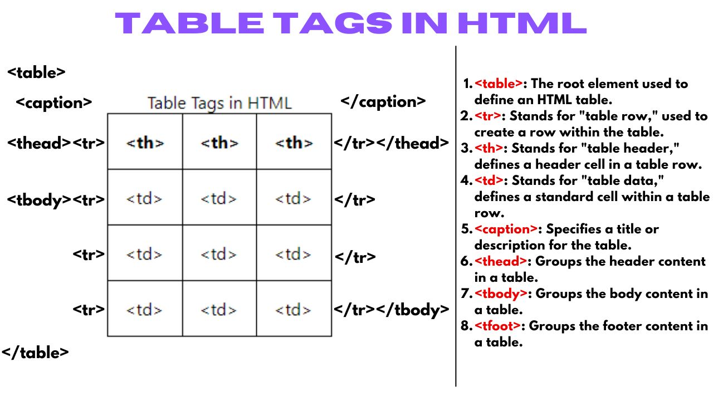

Esercitazione 01 TPS 4Ai
HTML è un linguaggio di markup usato per creare e strutturare le pagine web. Funziona attraverso tag che definiscono elementi come titoli, paragrafi, link, immagini e tabelle, permettendo ai browser di visualizzare correttamente i contenuti.
- Intestazioni h1...h6
- elementi di blocco div, main, article, aside, section...
- tag per enfatizzare il linguaggio strong, emp...
- tabelle table, tbody, th, tr, td, tfooter...
- collegamenti ipertestuali, interni, esterni, remoti
Intestazione h1, h2, h3, h4, h5, h6
Le intestazioni HTML h1–h6 servono a strutturare i contenuti di una pagina in modo gerarchico. h1 è il titolo principale, da usare una sola volta, mentre gli altri (da h2 a h6) suddividono il testo in sezioni e sottosezioni. Sono importanti per la leggibilità, l’accessibilità e la SEO, perché aiutano i motori di ricerca a capire l’organizzazione del contenuto. È consigliato mantenere un ordine logico e non saltare livelli (es. non passare da h2 a h4 senza un h3).

Elementi di blocco: div, main, article, aside, section
Gli elementi di blocco HTML come div, main, article, aside e section servono a strutturare il contenuto di una pagina web. Div è un contenitore generico, privo di significato semantico, usato per raggruppare elementi a fini di stile o script. Main rappresenta il contenuto principale della pagina, quello più rilevante per l’utente, e dovrebbe comparire una sola volta. Article è pensato per contenuti autonomi e riutilizzabili, come post di blog o articoli di giornale. Aside contiene contenuti marginali o complementari, come note, pubblicità o link correlati. Section è usato per suddividere il contenuto in blocchi tematici, ciascuno con un proprio titolo. Vuoi un esempio pratico con questi elementi?
Tag per enfatizzare il linguaggio: strong, em
I tag HTML strong ed em servono per enfatizzare il testo, ma con significati diversi. Il tag strong indica che una parola o frase ha un'importanza particolare nel contesto. Non è solo una questione di stile (come il grassetto), ma di significato: il contenuto racchiuso in strong è considerato rilevante, urgente o tematicamente centrale. I browser lo visualizzano in grassetto, ma il suo valore è semantico, utile anche per la SEO e per i lettori con tecnologie assistive. Il tag em invece serve a dare enfasi a una parola o frase, come se la si pronunciasse con un tono diverso. È usato per sottolineare un cambiamento nel ritmo o nell’intonazione del discorso. I browser lo rendono in corsivo, ma anche qui il significato è più importante dello stile: em comunica un'enfasi nel linguaggio, non solo un effetto visivo. In HTML5, entrambi i tag sono preferiti rispetto a b e i, perché aggiungono significato al contenuto, non solo forma.
Tabelle: table, tbody, th, tr, td, tfooter
In HTML, il tag table definisce una tabella. Al suo interno si usano tr per creare righe, td per celle di dati e th per celle di intestazione. Il contenuto principale della tabella va racchiuso in tbody, mentre thead e tfoot servono rispettivamente per intestazioni e piè di pagina. Tbody può contenere più tr, ognuno con td o th. Tfoot viene posizionato dopo tbody nel codice ma può essere visualizzato in alto durante la stampa. Questi elementi aiutano a strutturare semanticamente la tabella e facilitano lo stile con CSS e l’accessibilità.

Collegamenti ipertestuali: a, link
I collegamenti ipertestuali in HTML permettono di passare da una pagina all’altra tramite il tag a. I collegamenti interni puntano a una sezione della stessa pagina o a un’altra pagina dello stesso sito, usando URL relativi. Quelli esterni collegano a pagine di altri siti, usando URL assoluti. I collegamenti remoti sono un tipo di collegamento esterno che punta a risorse su server diversi, come file, immagini o documenti ospitati altrove. Tutti questi link migliorano la navigazione e l’esperienza utente.